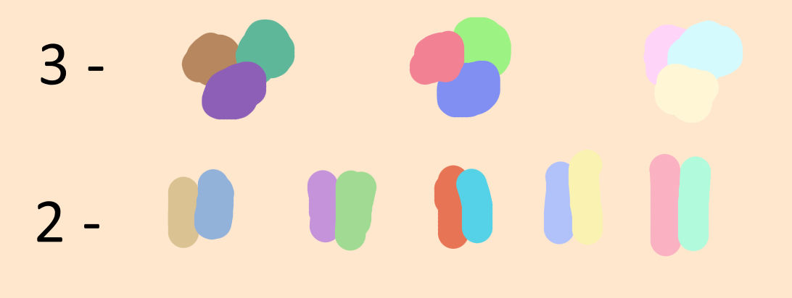

You may notice that the proceeding archetypes build from or are similar to the past ones.
This helps you to see how one evolves into two, and two into three, etc.
Geometry
Correspondences
| Negative | Neutral | Positive |
|---|---|---|
| Earth | Sea | Sky |
| Blue | Green | Red |
| Black | Grey | White |
| Salt(Body) | Oil(Essence) | Alcohol(Solvent) |
| Muscular | Fat | Skinny |
| Body | Heart | Mind |
| Legs | Arms | Head |
| Solid | Semi-solid | Non physical |
Colors
Overlay a triangle onto a color wheel to find triad colors. A line can be used for dual colors and other geometry for different numbers.
